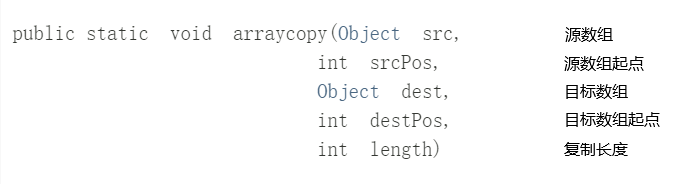

解决 “next greater number” 问题
496. 下一个更大元素 I
给你两个 没有重复元素 的数组 nums1 和 nums2 ，其中nums1 是 nums2 的子集。
请你找出 nums1 中每个元素在 nums2 中的下一个比其大的值。
nums1 中数字 x 的下一个更大元素是指 x 在 nums2 中对应位置的右边的第一个比 x 大的元素。如果不存在，对应位置输出 -1 。
思路：
- 先对nums2从尾到头，通过单调栈寻找下一个更大数，存入HashMap
- nums1直接通过HashMap提取，返回答案
- 重点是通过单调栈寻找下一个更大数
class Solution {
public int[] nextGreaterElement(int[] nums1, int[] nums2) {
int[] ans=new int[nums1.length];
HashMap<Integer,Integer> num=build(nums2);
for(int i=0;i<nums1.length;i++){
ans[i]=num.get(nums1[i]);
}
return ans;
}
public HashMap<Integer,Integer> build(int[] nums2){
Stack<Integer> stack=new Stack<>();
HashMap<Integer,Integer> ans=new HashMap<>();
//nums2从尾到头
for(int i=nums2.length-1;i>=0;i--){
while(!stack.empty()&&nums2[i]>=stack.peek()){
stack.pop();
}
int v=stack.empty()?-1:stack.peek();
stack.push(nums2[i]);//进栈，进行后面的大小判定
ans.put(nums2[i],v);
}
return ans;
}
}
503. 下一个更大元素 II
环形数组
思路：
- 把原数组“复制”一份，如原来
[1,2,1]——>[1,2,1,1,2,1]，再对新数组通过单调栈处理即可 - 通过==取余==操作，达到不增长数组空间
class Solution {
public int[] nextGreaterElements(int[] nums) {
int len=nums.length;
int[] ans=new int[len];
Stack<Integer> s=new Stack<>();
//nums数组变为原来的两倍
for(int i=2*len-1;i>=0;i--){
while(!s.empty()&&nums[i%len]>=s.peek()){
s.pop();
}
//ans最终会被赋两趟值，[len+1,len+2..,2len-1]被[1,2,..len-1]覆盖
ans[i%len]=s.empty()?-1:s.peek();
s.push(nums[i%len]);
}
return ans;
}
}
739. 每日温度
请根据每日 气温 列表，重新生成一个列表。对应位置的输出为：要想观测到更高的气温，至少需要等待的天数。如果气温在这之后都不会升高，请在该位置用 0 来代替
例如，给定一个列表 temperatures = [73, 74, 75, 71, 69, 72, 76, 73]，你的输出应该是 [1, 1, 4, 2, 1, 1, 0, 0]
思路：
- 也是单调栈，不过存入栈的是索引
class Solution {
public int[] dailyTemperatures(int[] temperatures) {
Stack<Integer> s=new Stack<>();
int[] ans=new int[temperatures.length];
for(int i=temperatures.length-1;i>=0;i--){
while(!s.empty()&&temperatures[i]>=temperatures[s.peek()]){
s.pop();
}
ans[i]=s.empty()?0:s.peek()-i;
s.push(i);
}
return ans;
}
}
(还不会)
给定 n 个非负整数，用来表示柱状图中各个柱子的高度。每个柱子彼此相邻，且宽度为 1
求在该柱状图中，能够勾勒出来的矩形的最大面积

思路：
-
对数组遍历，每个点的值为高，往左&往右直到遇到比当前值小的点，为宽
-
数组两端个加个0，便于判断，通过
System的静态复制方法int[] tmp = new int[heights.length + 2]; System.arraycopy(heights, 0, tmp, 1, heights.length); //temp中未赋值的[0]和[heights.length+1]初始化为0